Discrete diffusion models have emerged as powerful frameworks for generating structured categorical data. However, efficiently sampling from reward-tilted distributions remains a fundamental challenge. While Twisted Sequential Monte Carlo (SMC) offers asymptotic exactness for this task, estimating the optimal twist function in discrete state spaces necessitates costly Monte Carlo approximations, resulting in a severe computational bottleneck at inference.
To overcome this limitation, we introduce Contrastive Distribution Matching (CDM), a novel framework that amortizes the cost of SMC inference by learning a parameterized twist function via positive and negative samples. For efficient training, we reformulate the gradient estimator to leverage the closed-form forward kernels of discrete diffusion models. In practice, evaluating our learned twist function incurs less than 5% additional computational overhead compared to compared to a single forward pass of the base model.
Through extensive empirical evaluations, we demonstrate that CDM consistently outperforms existing baselines under matched wall-clock time. We validate the effectiveness and versatility of our approach across a diverse range of applications, including toxic text generation, regulatory DNA sequence design, protein designability, and diffusion large language model alignment.
Reward-aligned sampling in diffusion models corresponds to drawing from a tilted target pt*(xt) ∝ ptbase(xt) ψt*(xt), where the optimal twist ψt* is the exponentiated value function. In continuous diffusion, Tweedie's formula provides a closed-form estimate of the clean sample, yielding a cheap plug-in twist.
In discrete diffusion this shortcut does not exist. Existing twisted SMC works relies on Monte Carlo estimate, requiring multiple reward queries for each particle and diffusion step. This becomes prohibitive when the reward is expensive (e.g., protein-designability scoring). Our goal is to amortize this cost by learning a value function, enabling constant-time evaluation during inference.
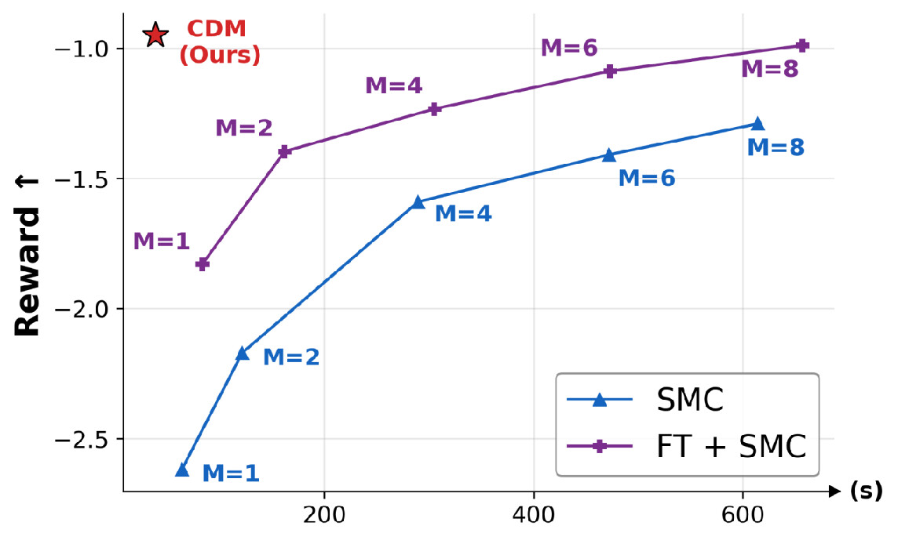
Increasing the number of Monte Carlo sample $M$ yields a more accurate twist estimate and better SMC performance, but inference cost grows proportionally. CDM (Ours) amortizes this cost and shows superior scalability.
CDM learns the parameterized twist function $\psi_t^\phi$ by aligning the twisted base distribution $p_t^\phi(\mathbf{x}_t) \propto p_t^{\text{base}}(\mathbf{x}_t)\,\psi_t^\phi(\mathbf{x}_t)$ with the optimal reward-tilted target $p_t^*$ under a time-averaged forward KL:
$\displaystyle \mathcal{L}_{\text{CDM}}(\phi) = \mathbb{E}_{t}\!\left[\, \mathcal{D}_{\text{KL}}\!\left( p_t^*(\mathbf{x}_t) \,\big\|\, p_t^\phi(\mathbf{x}_t) \right) \right].$
Its gradient has a contrastive form — a positive term that raises $\log\psi_t^\phi$ on samples drawn from the target, and a negative term that lowers it on samples drawn from the current twisted model:
$\displaystyle -\nabla_\phi \mathcal{L}_{\text{CDM}}(\phi) \;=\; \mathbb{E}_{t}\!\bigg[\, \underbrace{\mathbb{E}_{p_t^*(\mathbf{x}_t)}\!\big[\nabla_\phi \log \psi_t^\phi(\mathbf{x}_t)\big]}_{\text{positive}} \;-\; \underbrace{\mathbb{E}_{p_t^\phi(\mathbf{x}_t)}\!\big[\nabla_\phi \log \psi_t^\phi(\mathbf{x}_t)\big]}_{\text{negative}} \bigg].$
Empirically, we found that incorporating negative gradients improves training convergence. However, estimating this gradient requires drawing positive samples, a process that necessitates costly reward evaluations. For additional efficiency, we leverage the closed-form forward kernel of discrete diffusion models to reuse clean positive samples across multiple timesteps.
A naive evaluation of the contrastive gradient allows only a single gradient update per (expensive) positive sample. We exploit a property unique to diffusion: the intermediate target decomposes through the closed-form forward kernel as $p_t^*(\mathbf{x}_t)=\sum_{\mathbf{x}_0}p_0^*(\mathbf{x}_0)\,p^{\mathrm{base}}(\mathbf{x}_t\mid \mathbf{x}_0)$. This yields the equivalent unbiased estimator that we actually train with:
$\displaystyle -\nabla_\phi \mathcal{L}_{\text{CDM}}(\phi) \;=\; \mathbb{E}_{t}\!\left[\, \mathbb{E}_{p_0^*(\mathbf{x}_0)}\, \mathbb{E}_{p^{\mathrm{base}}(\mathbf{x}_t\mid \mathbf{x}_0)}\!\big[\nabla_\phi \log \psi_t^\phi(\mathbf{x}_t)\big] \;-\; \mathbb{E}_{p_t^\phi(\mathbf{x}_t)}\!\big[\nabla_\phi \log \psi_t^\phi(\mathbf{x}_t)\big] \right].$
In practice, CDM maintains a buffer $\mathcal{B}$ of clean positives obtained from the approximated target $p_0^*$ and re-noises them across timesteps for many gradient updates per reward query. This decouples reward-evaluation cost from the number of training updates which is a structural property unavailable to autoregressive settings [1].
Additionally, an efficient parameterization of the twist function is crucial for scalable inference. We attach $\psi_t^\phi$ as a lightweight scalar head on top of the final feature layer of the pretrained denoiser. Once the backbone features are computed, both the denoising logits and the twist estimate are produced in a single forward pass, adding around 5% overhead (as little as 0.5%) over base-model forward pass.
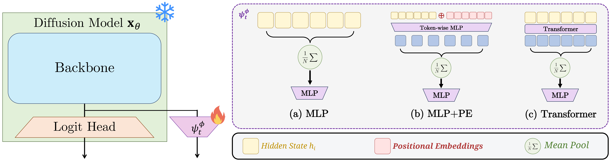
The twist function is parameterized as a lightweight scalar head on top of the pretrained denoiser, adding less than 5% overhead at inference (left). Three architectural choices for the twist head: (a) MLP, (b) MLP+PE, and (c) Transformer (right).
Since CDM learns the twist function directly, it is also orthogonal to the choice of proposal distribution. It can be plugged into SMC over the base model, over a reward-fine-tuned proposal (e.g., DRAKES [2], GRPO-style fine-tuning, d1 [3]), composing additively for further gains while preserving the diversity of the base distribution.
We benchmark CDM across four reward-alignment tasks: toxic text generation, regulatory DNA design, protein designability, and diffusion LLM alignment. For each task we plot reward versus matched wall-clock time and report a heldout reward that is not observed during scaling.
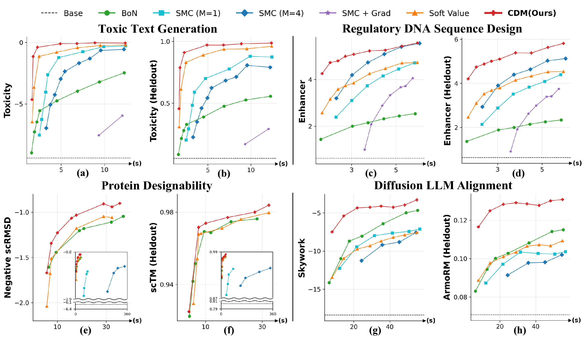
CDM achieves the best scaling behavior across both given and heldout rewards in all four applications.
Because CDM is proposal-agnostic, it can be paired with reward-aware fine-tuned proposals such as DRAKES (reward backpropagation) or d1 (GRPO-style RL fine-tuning). Notably, the twist function can be trained independently of the proposal fine-tuning, allowing a single learned twist head to be reused across different models for synergistic performance gains.
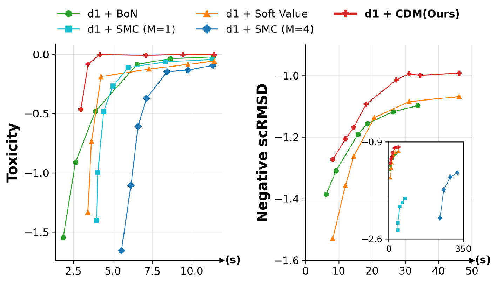
d1 + CDM on toxic text generation (left) and regulatory DNA design (right).
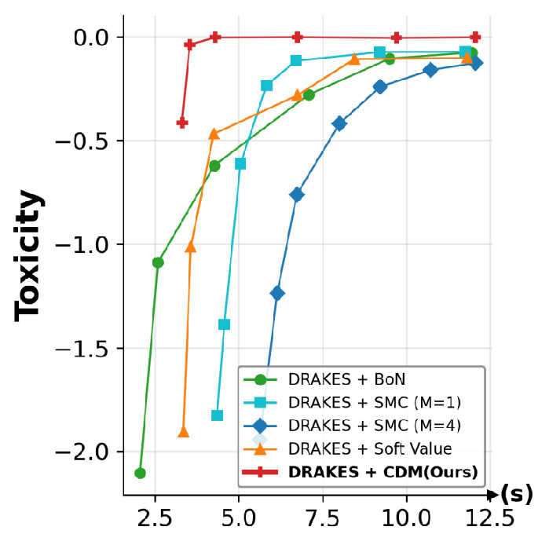
DRAKES + CDM on toxic text generation.
Beyond reward, we evaluate diversity: Self-BLEU, perplexity for toxic text generation and cluster count, intra-cluster TM-score for protein designability. Reward fine-tuning baselines (d1, DRAKES) often trade diversity for reward, whereas CDM achieves higher reward and better diversity simultaneously.
| Reward ↑ | Self-BLEU ↓ | PPL ↓ | |
|---|---|---|---|
| d1 | −0.933 | 0.051 | 332.322 |
| DRAKES | −1.051 | 0.027 | 322.424 |
| CDM (Ours) | −0.845 | 0.015 | 124.500 |
| Reward ↑ | Clusters ↑ | Inner TM ↓ | |
|---|---|---|---|
| d1 | −1.876 | 14 | 0.851 |
| CDM (Ours) | −1.723 | 17 | 0.499 |
Compared to regression-based objectives (Soft Value) [4] that learn the twist from base-model samples, CDM, which leverages both positive and negative samples, converges faster and reaches higher reward levels under a matched training budget on both toxic text generation and DNA enhancer design.
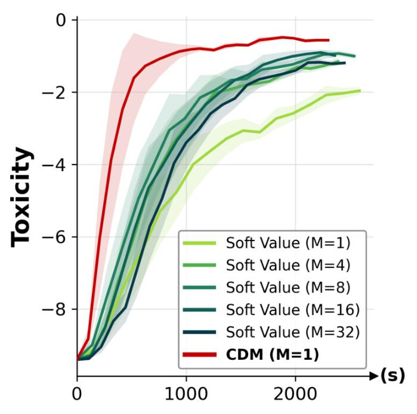
Toxic Text Generation
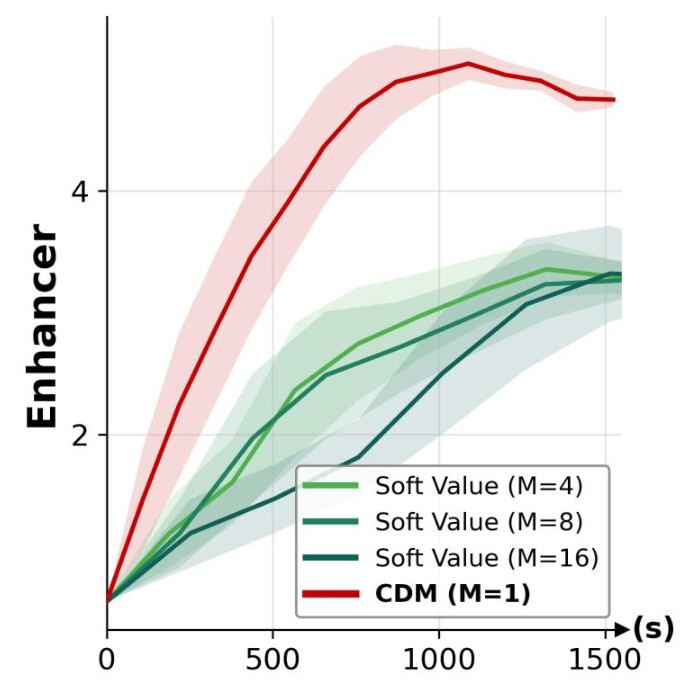
Regulatory DNA Design
CDM exhibits superior training convergence, consistently outperforming regression-based Soft Value objective across various Monte Carlo sample sizes $M$.
proteins sampled with CDM exhibit highly designable characteristics, demonstrating a close match between the generated target structure and its refolded counterpart.
| Base |
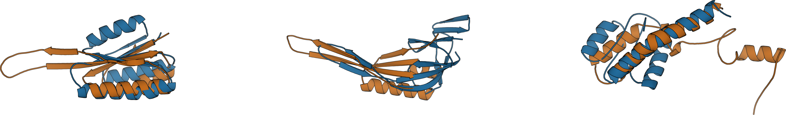 |
| BoN |
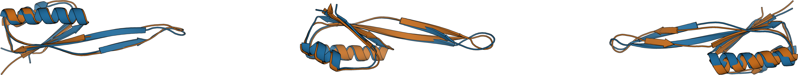 |
| SMC |
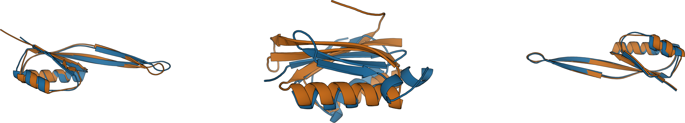 |
| Soft Value |
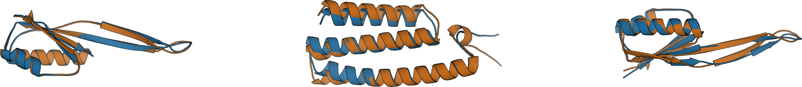 |
| CDM (Ours) |
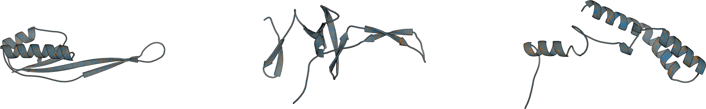 |
CDM successfully steers the model to produce helpful, accurate, and aligned text across diverse domains.
We thank Jason Yoo for insightful discussions on learning the value function for SMC in generative models, and Yuchen Zhu for providing new insights into the role of negative gradients.
@article{kim2026cdm,
title = {Contrastive Distribution Matching for Amortized Sequential Monte Carlo in Discrete Diffusion},
author = {Kim, Jaihoon and Yoon, Taehoon and Phunyaphibarn, Prin and Kim, Seungjun and Mardani, Morteza and Sung, Minhyuk},
journal = {arXiv preprint arXiv:2605.23346},
year = {2026}
}